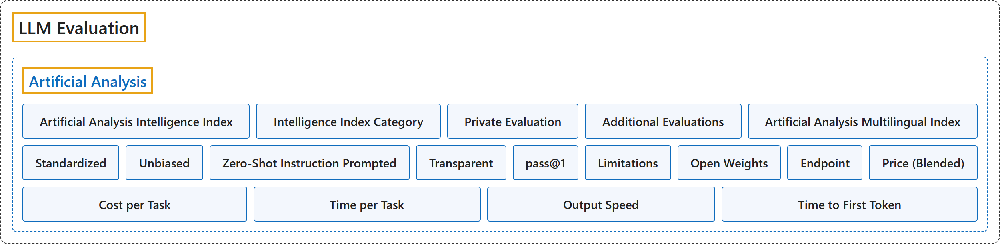

Artificial Analysis
Classification

Glossary
| Term | Definition | 中文翻译 | Source |
|---|---|---|---|
| Artificial Analysis Artificial Analysis |
(Summary) A company that benchmarks AI models, API endpoints and systems on intelligence, quality, performance and price, measuring the performance customers actually get across providers rather than the best a piece of hardware can do. | （概述）一家为 AI 模型、API 端点和系统做基准测试的公司，测智能、质量、性能和价格，衡量的是各家服务商那里客户实际得到的性能，而不是某种硬件能达到的最好水平。 | Artificial Analysis, n.d.-a, "Scope" |
| Artificial Analysis Intelligence Index Artificial Analysis 智能指数 |
(Summary) A weighted average over a suite of evaluations (nine in version 5.0.1, the version cached) that sums up a language model's intelligence across knowledge work, coding, science and general knowledge, meant for comparing models. | （概述）对一组评测取加权平均（缓存时的 5.0.1 版共九项），综合概括语言模型的智能水平，覆盖知识工作、编程、科学与常识，用于比较模型。 | Artificial Analysis, n.d.-b, "Artificial Analysis Intelligence Index" |
| Intelligence Index Category 智能指数类别 |
(Summary) One of the four groups the index is built from, Knowledge Work, Coding, Science and General, each weighted 25%, with its own per-evaluation weights inside. | （概述）指数所由构成的四个组之一：Knowledge Work、Coding、Science、General，每组权重 25%，组内各项评测另有权重。 | Artificial Analysis, n.d.-b, "Artificial Analysis Intelligence Index" |
| Private Evaluation 私有评测 |
(Summary) An evaluation in the index that is marked Private in the suite table, as opposed to one built on a publicly released dataset. | （概述）指数中在评测表里标为 Private 的评测，相对于建立在公开发布的数据集之上的评测。 | Artificial Analysis, n.d.-b, "Artificial Analysis Intelligence Index" |
| Additional Evaluations 附加评测 |
(Summary) Evaluations run beyond the index suite, such as multilingual, visual and mathematical ones, which are reported separately and do not count toward the index score. | （概述）在指数套件之外运行的评测，如多语言、视觉、数学类，单独报告，不计入指数得分。 | Artificial Analysis, n.d.-b, "Additional Evaluations" |
| Artificial Analysis Multilingual Index Artificial Analysis 多语言指数 |
(Summary) A separate index of multilingual ability, based on the Global-MMLU-Lite evaluation in the languages Artificial Analysis supports, Chinese among them. | （概述）一项单独的多语言能力指数，依据 Global-MMLU-Lite 评测，覆盖 Artificial Analysis 支持的语言，其中包括中文。 | Artificial Analysis, n.d.-b, "Additional Evaluations" |
| Standardized 标准化 |
(Summary) An evaluation principle: every model is tested under identical conditions, with the same prompting, temperature settings and evaluation criteria. | （概述）一条评测原则：每个模型都在相同条件下测试，提示方式、温度设置和评判标准都一样。 | Artificial Analysis, n.d.-b, "Intelligence Evaluation Principles" |
| Unbiased 无偏 |
(Summary) An evaluation principle: answers that do follow the prompt's instructions are not unfairly penalized, through clear prompts and flexible answer extraction and validation. | （概述）一条评测原则：确实遵守了提示指令的回答不受不公平的扣分，靠的是清楚的提示和灵活的答案抽取与校验。 | Artificial Analysis, n.d.-b, "Intelligence Evaluation Principles" |
| Zero-Shot Instruction Prompted 零样本指令提示 |
(Summary) An evaluation principle: models get clear instructions without examples, so the test shows whether they follow directions without few-shot learning. | （概述）一条评测原则：给模型清楚的指令而不给示例，于是测出的是模型能否不靠少样本学习就按指示做。 | Artificial Analysis, n.d.-b, "Intelligence Evaluation Principles" |
| Transparent 透明 |
(Summary) An evaluation principle: the methodology is disclosed, including prompt templates, evaluation criteria and known limitations. | （概述）一条评测原则：公开方法，包括提示模板、评判标准和已知局限。 | Artificial Analysis, n.d.-b, "Intelligence Evaluation Principles" |
| pass@1 pass@1 |
(Summary) Scoring in which a model must give the correct answer on its first attempt; for evaluations run several times, the result is averaged over all repeats. | （概述）一种计分方式：模型必须第一次尝试就答对；对重复运行多次的评测，结果在所有重复上取平均。 | Artificial Analysis, n.d.-b, "General Testing Parameters" |
| Limitations 局限 |
(Summary) The index is said to have limitations and not to fit every use case; it is a primarily text-based, English-language suite, with visual reasoning, speech input and multilingual ability measured separately. | （概述）该指数被说明有局限、并不适用于每种用例；它是一套以文本为主的英语评测，视觉推理、语音输入和多语言能力另行测量。 | Artificial Analysis, n.d.-b, "Artificial Analysis Intelligence Index" |
| Open Weights 开放权重 |
(Summary) A model whose weights its creator has released publicly; the term is used instead of "open source" because many such licenses do not meet the full definition of open-source software. | （概述）创建者已公开发布权重的模型；用这个说法而不说"开源"，是因为许多此类许可达不到开源软件的完整定义。 | Artificial Analysis, n.d.-a, "Definitions" |
| Endpoint 端点 |
(Summary) A hosted instance of a model reached through an API; one model may have several endpoints at different providers. | （概述）通过 API 访问的模型托管实例；同一个模型可能在不同服务商那里有多个端点。 | Artificial Analysis, n.d.-a, "Definitions" |
| Price (Blended) 混合价格 |
(Summary) A single price for easier comparison, assuming a 7:2:1 mix of cache-hit, input and output tokens. | （概述）为便于比较而算出的单一价格，假定按 7:2:1 混合缓存命中、输入和输出令牌。 | Artificial Analysis, n.d.-a, "Definitions" |
| Cost per Task 每任务成本 |
(Summary) The weighted-average cost in US dollars of one Intelligence Index task; because it follows actual token use, models that write longer answers or more reasoning cost more even at the same per-token price. | （概述）完成一道智能指数任务的加权平均美元成本；由于它按实际令牌用量计算，回答更长或推理更多的模型即使单价相同也更贵。 | Artificial Analysis, n.d.-a, "Definitions" |
| Time per Task 每任务时间 |
(Summary) The estimated weighted-average time for one Intelligence Index task, derived from tokens per task and the model's output speed rather than from timing the evaluation runs. | （概述）完成一道智能指数任务的估计加权平均时间，由每题令牌数和模型的输出速度推算，而不是给评测运行计时。 | Artificial Analysis, n.d.-a, "Definitions" |
| Output Speed 输出速度 |
(Summary) Output tokens per second, reasoning tokens included, over a request's full duration from sending it to receiving the final token. | （概述）每秒输出令牌数，含推理令牌，按请求的完整时长计算，从发出请求到收到最后一个令牌。 | Artificial Analysis, n.d.-a, "Definitions" |
| Time to First Token 首令牌时间 |
(Summary) The seconds between sending a request and receiving the first token of the response, which for reasoning models is the first reasoning token. | （概述）从发出请求到收到响应的第一个令牌之间的秒数；对推理模型来说是第一个推理令牌。 | Artificial Analysis, n.d.-a, "Definitions" |
References
Artificial Analysis. (n.d.-a). Artificial Analysis benchmarking methodology. Retrieved November 10, 2026, from https://artificialanalysis.ai/methodology
Artificial Analysis. (n.d.-b). Artificial Analysis intelligence benchmarking methodology (Intelligence Index v5.0.1). Retrieved November 10, 2026, from https://artificialanalysis.ai/methodology/intelligence-benchmarking